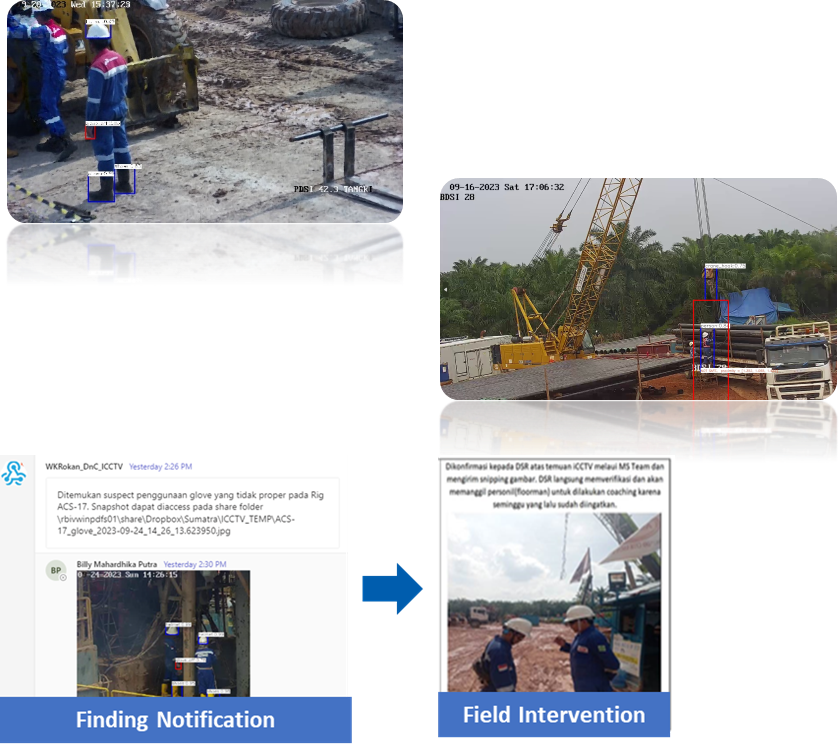

Back

Opportunity
- Increased Drilling & WOWS activities would directly be proportional to have higher safety risks.
- Adequate safety supervision is needed to assure that all the aspects follow all safe work practice.
- Top 5 Finding Unsafe Action/Behaviour from iCCTV :
- Lifting and Rigging 25%
- Hazard Analysis 24%
- Personal Protective Equipment (PPE) 14%
- Working at Height 9%
- Motor Vehicle & Eq 8%
Innovation
- Develop object detection AI model to detect unsafe behavior in rig, with focused into two main topics PPE usage detection and Under Suspended Load detection on Lifting Rigging Ops.
- Develop real-time notification system to notify HSSE immediately.
- Using YOLOv4 object detection for training and deployment model.